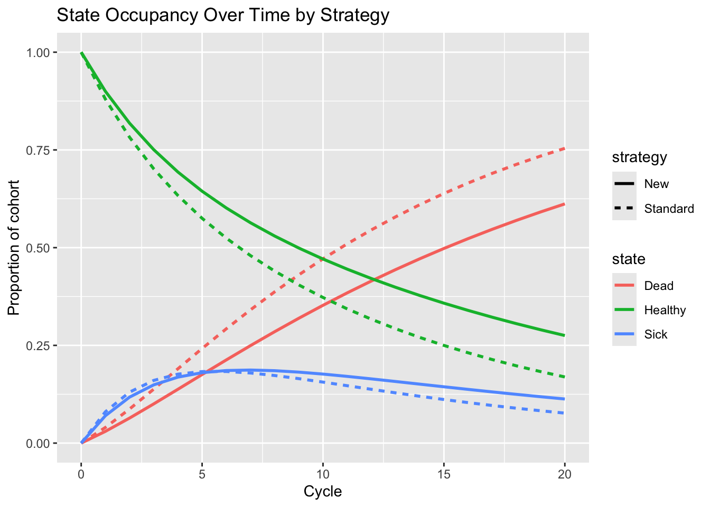

1. Introduction: turning Markov chains into decision tools
In the previous tutorial, we met Markov chains as a way to model how patients move between states like Healthy, Sick, and Dead over time.
Now we ask a very HEOR-flavored question:
“What if we attach costs and QALYs to those states, and compare two interventions?”
That’s exactly what Markov health decision models do:
Use Markov chains to model disease progression and survival,
Combine this with costs and utilities/QALYs,
Calculate expected lifetime costs and effects for each strategy,
Support cost-effectiveness and policy decisions.
In this tutorial we’ll:
Set up a simple cohort Markov model,
Compare Standard care vs New treatment,
Use synthetic probabilities, costs, and utilities,
Compute expected total costs and QALYs,
Discuss strengths and limitations,
And highlight why Markov models are central to HEOR.
2. Foundations: Markov state-transition models in HEOR
2.1. States, transitions, and cycles
A typical health decision Markov model has:
A finite set of health states (e.g., Healthy, Disease, Dead),
A cycle length (e.g., 1 year),
A transition probability matrix for each strategy,
An initial distribution over states (e.g., 100% Healthy at baseline).
Over each cycle:
Patients transition between states according to the matrix,
Costs and QALYs accrue based on time spent in each state,
We (optionally) apply discounting to reflect time preference for costs and health.
2.2. Cohort vs microsimulation
Here we focus on a cohort Markov model:
We track proportions of a hypothetical cohort in each state over time,
Use matrix multiplication: \(\pi_{t+1} = \pi_t P\),
Multiply state occupancy by costs and utilities to get expected totals.
Microsimulation (individual-level state transitions) is similar but simulates individuals instead of cohorts — often using the same transition probabilities.
2.3. Discounting
For annual cycles and discount rate \(r\):
Discount factor in year \(t\) (starting at \(t = 0\)):
\[
d_t = \frac{1}{(1 + r)^t}.
\]
We apply discounting to both costs and QALYs (commonly).
3. Example in R: simple 3-state Markov model
We’ll build a toy example:
States: Healthy (H), Sick (S), Dead (D),
Horizon: 20 annual cycles,
Two strategies: Standard, New.
3.1. Model setup
Code
states <-c("Healthy", "Sick", "Dead")n_states <-length(states)n_cycle <-20# 20-year horizondiscount_rate <-0.03# Discount factors per cycle (start at t = 0)cycles <-0:n_cycledisc_factors <-1/ (1+ discount_rate)^cyclesdisc_factors
library(ggplot2)library(tidyr)library(dplyr)df_std <-as.data.frame(res_standard$dist_mat)df_std$cycle <-0:n_cycledf_std$strategy <-"Standard"df_new <-as.data.frame(res_new$dist_mat)df_new$cycle <-0:n_cycledf_new$strategy <-"New"occ_all <-bind_rows(df_std, df_new) %>%pivot_longer(cols =c("Healthy", "Sick", "Dead"),names_to ="state", values_to ="prob")ggplot(occ_all, aes(x = cycle, y = prob, color = state, linetype = strategy)) +geom_line(size =1) +labs(title ="State Occupancy Over Time by Strategy",x ="Cycle",y ="Proportion of cohort" ) +ylim(0, 1)

Cohort Markov model: state occupancy over time for Standard vs New.
This simple model gives:
Lifetime discounted costs and QALYs for each strategy,
State occupancy trajectories,
An ICER for decision making.
4. Strengths of Markov health decision models
Natural framework for chronic diseases
Many chronic conditions involve progression through discrete states over time. Markov models capture this in a structured way.
Transparent and relatively easy to explain
The state-transition structure (with a diagram) is intuitive for clinicians and policymakers: “Patients move between these health states with these probabilities.”
Flexible for time horizons and strategies
You can extend the horizon, add states, and compare multiple strategies relatively easily in a Markov framework.
Compatible with PSA and VOI
Markov models can be embedded in Monte Carlo simulation to propagate parameter uncertainty, produce CEACs, and support VOI analysis.
5. Limitations of Markov health decision models
Markov assumption and memoryless structure
Without extensions, the model assumes future transitions depend only on the current state, not on how long you’ve been there or your previous history (which may be unrealistic).
State explosion with detailed history
Trying to encode more history (e.g., number of previous events, time since last event) can lead to large state spaces and complex models.
Cycle length and discretization
Choosing annual vs monthly cycles affects accuracy and complexity. Too long a cycle can introduce bias in capturing event timing and mortality.
Parameter and structural uncertainty
Transition probabilities and state definitions are often uncertain or based on limited data. Structural assumptions (which states, which transitions) can strongly influence results.
6. Why Markov decision models matter for HEOR and health policy
Markov models are one of the workhorses of health economic evaluation. They’re used to:
Evaluate chronic disease interventions
E.g., screening programs, preventive treatments, chronic disease management — where long-term benefits and costs accumulate over years or decades.
Support reimbursement and coverage decisions
Health technology assessment (HTA) bodies often see Markov models in submissions for new drugs, devices, and prevention programs.
Plan population-level strategies
Markov models can be scaled or combined with population data to predict the impact of policies (e.g., vaccination programs, treatment guidelines) on population health and budgets.
Integrate with more complex simulations
Markov models are often a starting point or a backbone for more complex microsimulation or discrete event simulation models, especially when more detail is required.
For a health economist, being comfortable with Markov models means:
You can translate verbal clinical stories (“patients progress from mild to severe disease…”) into formal analytic structures,
You can attach costs and QALYs and produce standard decision metrics (ICERs, CEACs),
You can communicate results transparently to clinicians, HTA bodies, and policymakers.
7. Further reading
Briggs, Claxton, & Sculpher – Decision Modelling for Health Economic Evaluation.
Core reference for Markov models, PSA, and economic evaluation.
Siebert et al. – State-Transition Modeling: A Report of the ISPOR-SMDM Modeling Good Research Practices Task Force. Value in Health.
Detailed guidance on best practices for Markov and state-transition models.
Sonnenberg & Beck (1993). Markov Models in Medical Decision Making: A Practical Guide. Medical Decision Making.
Classic paper introducing Markov models for medical decision analysis.
Karnon et al. – A Review and Critique of Modelling in NICE Technology Appraisals. Health Technology Assessment.
Discusses Markov models (among others) in the context of real-world HTA submissions.
Source Code
---title: "Markov Health Decision Models: Following Patients Through Health States"---# 1. Introduction: turning Markov chains into decision toolsIn the previous tutorial, we met **Markov chains** as a way to model how patients move between states like Healthy, Sick, and Dead over time.Now we ask a very HEOR-flavored question:> “What if we attach **costs** and **QALYs** to those states, and compare two interventions?”That’s exactly what **Markov health decision models** do:- Use Markov chains to model disease progression and survival,- Combine this with costs and utilities/QALYs,- Calculate expected lifetime costs and effects for each strategy,- Support cost-effectiveness and policy decisions.In this tutorial we’ll:- Set up a simple cohort Markov model,- Compare **Standard care** vs **New treatment**,- Use synthetic probabilities, costs, and utilities,- Compute expected total costs and QALYs,- Discuss strengths and limitations,- And highlight why Markov models are central to HEOR.---# 2. Foundations: Markov state-transition models in HEOR## 2.1. States, transitions, and cyclesA typical health decision Markov model has:- A finite set of health states (e.g., Healthy, Disease, Dead),- A cycle length (e.g., 1 year),- A transition probability matrix for each strategy,- An initial distribution over states (e.g., 100% Healthy at baseline).Over each cycle:1. Patients transition between states according to the matrix,2. Costs and QALYs accrue based on time spent in each state,3. We (optionally) apply discounting to reflect time preference for costs and health.## 2.2. Cohort vs microsimulationHere we focus on a **cohort** Markov model:- We track **proportions** of a hypothetical cohort in each state over time,- Use matrix multiplication: $\pi_{t+1} = \pi_t P$,- Multiply state occupancy by costs and utilities to get expected totals.Microsimulation (individual-level state transitions) is similar but simulates individuals instead of cohorts — often using the same transition probabilities.## 2.3. DiscountingFor annual cycles and discount rate $r$:- Discount factor in year $t$ (starting at $t = 0$):$$d_t = \frac{1}{(1 + r)^t}.$$We apply discounting to both costs and QALYs (commonly).---# 3. Example in R: simple 3-state Markov modelWe’ll build a toy example:- States: Healthy (H), Sick (S), Dead (D),- Horizon: 20 annual cycles,- Two strategies: Standard, New.## 3.1. Model setup```{r}#| label: markov-health-setup#| message: false#| warning: falsestates <-c("Healthy", "Sick", "Dead")n_states <-length(states)n_cycle <-20# 20-year horizondiscount_rate <-0.03# Discount factors per cycle (start at t = 0)cycles <-0:n_cycledisc_factors <-1/ (1+ discount_rate)^cyclesdisc_factors```## 3.2. Transition matricesWe define separate transition matrices for Standard and New strategies.- Standard care: higher risk of moving from Healthy → Sick and Sick → Dead.- New treatment: slightly reduces progression and mortality.```{r}#| label: markov-health-transitions#| message: false#| warning: false# Rows: from state, Columns: to stateP_standard <-matrix(c(0.88, 0.08, 0.04, # from Healthy0.10, 0.75, 0.15, # from Sick0.00, 0.00, 1.00# from Dead ),nrow =3,byrow =TRUE)colnames(P_standard) <- statesrownames(P_standard) <- statesP_new <-matrix(c(0.90, 0.07, 0.03, # from Healthy (slightly lower progression and death)0.12, 0.78, 0.10, # from Sick (slightly better survival)0.00, 0.00, 1.00 ),nrow =3,byrow =TRUE)colnames(P_new) <- statesrownames(P_new) <- statesP_standardP_new```## 3.3. State costs and utilitiesWe assign annual cost and utility (QALY weight) to each state, per strategy.For simplicity:- State costs same across strategies, but New has an additional **treatment cost** while alive.```{r}#| label: markov-health-costs-utilities#| message: false#| warning: false# Base state costs (per year)cost_H <-500# Healthycost_S <-4000# Sickcost_D <-0# Dead# Utilities (QALY weights)util_H <-0.9util_S <-0.6util_D <-0.0# Strategy-specific extra costs per year (e.g., treatment cost)extra_cost_standard <-0extra_cost_new <-1500# extra cost while alive (H or S)state_costs_standard <-c(cost_H, cost_S, cost_D)state_costs_new <-c(cost_H + extra_cost_new, cost_S + extra_cost_new, cost_D)state_utils <-c(util_H, util_S, util_D)state_costs_standardstate_costs_newstate_utils```## 3.4. Cohort Markov model functionWe write a small helper function to run the cohort model for a given strategy.```{r}#| label: markov-health-function#| message: false#| warning: falserun_markov_cohort <-function(P, state_costs, state_utils, n_cycle, disc_rate =0.03) { states <-length(state_costs) cycles <-0:n_cycle disc_factors <-1/ (1+ disc_rate)^cycles# Initial distribution: all Healthy at t = 0 dist_mat <-matrix(0, nrow = n_cycle +1, ncol = states)colnames(dist_mat) <-c("Healthy", "Sick", "Dead") dist_mat[1, "Healthy"] <-1.0# Evolve the cohortfor (t in1:n_cycle) { dist_mat[t +1, ] <- dist_mat[t, ] %*% P }# Costs and QALYs per cycle (undiscounted) cost_per_cycle <- dist_mat %*% state_costs qaly_per_cycle <- dist_mat %*% state_utils# Apply discounting disc_costs <-as.numeric(cost_per_cycle) * disc_factors disc_qalys <-as.numeric(qaly_per_cycle) * disc_factorslist(dist_mat = dist_mat,cost_per_cycle =as.numeric(cost_per_cycle),qaly_per_cycle =as.numeric(qaly_per_cycle),disc_costs = disc_costs,disc_qalys = disc_qalys,total_cost =sum(disc_costs),total_qaly =sum(disc_qalys) )}```## 3.5. Running the model for both strategies```{r}#| label: markov-health-run#| message: false#| warning: falseres_standard <-run_markov_cohort(P = P_standard,state_costs = state_costs_standard,state_utils = state_utils,n_cycle = n_cycle,disc_rate = discount_rate)res_new <-run_markov_cohort(P = P_new,state_costs = state_costs_new,state_utils = state_utils,n_cycle = n_cycle,disc_rate = discount_rate)c(Standard_total_cost = res_standard$total_cost,New_total_cost = res_new$total_cost)c(Standard_total_qaly = res_standard$total_qaly,New_total_qaly = res_new$total_qaly)```We can compute incremental outcomes:```{r}#| label: markov-health-incrementals#| message: false#| warning: falsedC <- res_new$total_cost - res_standard$total_costdE <- res_new$total_qaly - res_standard$total_qalyICER <- dC / dEc(Incremental_cost = dC,Incremental_qaly = dE,ICER = ICER)```## 3.6. Visualizing state occupancy```{r}#| label: markov-health-plot#| message: false#| warning: false#| fig.cap: "Cohort Markov model: state occupancy over time for Standard vs New."library(ggplot2)library(tidyr)library(dplyr)df_std <-as.data.frame(res_standard$dist_mat)df_std$cycle <-0:n_cycledf_std$strategy <-"Standard"df_new <-as.data.frame(res_new$dist_mat)df_new$cycle <-0:n_cycledf_new$strategy <-"New"occ_all <-bind_rows(df_std, df_new) %>%pivot_longer(cols =c("Healthy", "Sick", "Dead"),names_to ="state", values_to ="prob")ggplot(occ_all, aes(x = cycle, y = prob, color = state, linetype = strategy)) +geom_line(size =1) +labs(title ="State Occupancy Over Time by Strategy",x ="Cycle",y ="Proportion of cohort" ) +ylim(0, 1)```This simple model gives:- Lifetime discounted costs and QALYs for each strategy,- State occupancy trajectories,- An ICER for decision making.---# 4. Strengths of Markov health decision models1. **Natural framework for chronic diseases** Many chronic conditions involve progression through discrete states over time. Markov models capture this in a structured way.2. **Transparent and relatively easy to explain** The state-transition structure (with a diagram) is intuitive for clinicians and policymakers: “Patients move between these health states with these probabilities.”3. **Flexible for time horizons and strategies** You can extend the horizon, add states, and compare multiple strategies relatively easily in a Markov framework.4. **Compatible with PSA and VOI** Markov models can be embedded in Monte Carlo simulation to propagate parameter uncertainty, produce CEACs, and support VOI analysis.---# 5. Limitations of Markov health decision models1. **Markov assumption and memoryless structure** Without extensions, the model assumes future transitions depend only on the current state, not on how long you’ve been there or your previous history (which may be unrealistic).2. **State explosion with detailed history** Trying to encode more history (e.g., number of previous events, time since last event) can lead to large state spaces and complex models.3. **Cycle length and discretization** Choosing annual vs monthly cycles affects accuracy and complexity. Too long a cycle can introduce bias in capturing event timing and mortality.4. **Parameter and structural uncertainty** Transition probabilities and state definitions are often uncertain or based on limited data. Structural assumptions (which states, which transitions) can strongly influence results.---# 6. Why Markov decision models matter for HEOR and health policyMarkov models are one of the **workhorses** of health economic evaluation. They’re used to:1. **Evaluate chronic disease interventions** E.g., screening programs, preventive treatments, chronic disease management — where long-term benefits and costs accumulate over years or decades.2. **Support reimbursement and coverage decisions** Health technology assessment (HTA) bodies often see Markov models in submissions for new drugs, devices, and prevention programs.3. **Plan population-level strategies** Markov models can be scaled or combined with population data to predict the impact of policies (e.g., vaccination programs, treatment guidelines) on population health and budgets.4. **Integrate with more complex simulations** Markov models are often a starting point or a backbone for more complex microsimulation or discrete event simulation models, especially when more detail is required.For a health economist, being comfortable with Markov models means:- You can translate verbal clinical stories (“patients progress from mild to severe disease…”) into formal analytic structures,- You can attach costs and QALYs and produce standard decision metrics (ICERs, CEACs),- You can communicate results transparently to clinicians, HTA bodies, and policymakers.---# 7. Further reading1. **Briggs, Claxton, & Sculpher – _Decision Modelling for Health Economic Evaluation_.** Core reference for Markov models, PSA, and economic evaluation.2. **Siebert et al. – _State-Transition Modeling: A Report of the ISPOR-SMDM Modeling Good Research Practices Task Force._ Value in Health.** Detailed guidance on best practices for Markov and state-transition models.3. **Sonnenberg & Beck (1993). _Markov Models in Medical Decision Making: A Practical Guide._ Medical Decision Making.** Classic paper introducing Markov models for medical decision analysis.4. **Karnon et al. – _A Review and Critique of Modelling in NICE Technology Appraisals._ Health Technology Assessment.** Discusses Markov models (among others) in the context of real-world HTA submissions.